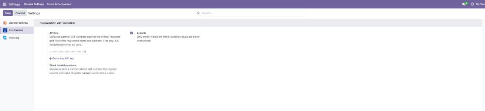
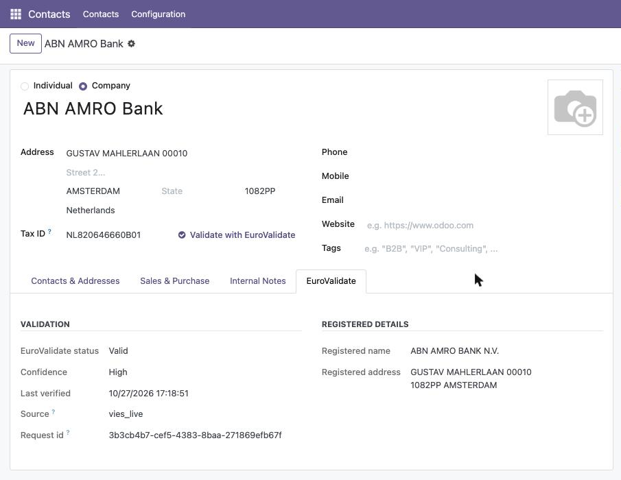

Odoo's built-in check only colours the VAT field green or red — and when VIES times out it
silently falls back to a checksum. This module sends the number to the
EuroValidate API (https://eurovalidate.com/odoo-vat-validation?utm_source=odoo&utm_medium=appstore&utm_campaign=description),
which answers from a 24-hour cache with a confidence flag when the national register is unavailable,
and pre-fills the registered company name and address on the partner.
confidence: medium, or an honest unavailable; never a false “valid”.100 validations per month, no card: eurovalidate.com (https://eurovalidate.com/v1/auth/signup?utm_source=odoo&utm_medium=appstore&utm_campaign=step1).
Settings → General Settings → EuroValidate. Keep Autofill on.

The number is validated, the name and address are filled in, the EuroValidate tab shows status and confidence.

The module is free (LGPL-3). The API has a free tier — 100 requests/month — and paid plans
from €19/month (Starter, 500,000 requests/month). Most back offices validating
a few hundred partners a month fit in Starter. Full pricing:
eurovalidate.com/#pricing (https://eurovalidate.com/#pricing).
Requirements: Odoo 17.0 or 18.0 on Odoo.sh or on-premise (Odoo Online cannot install
third-party Python modules). Python package requests.
Docs: api.eurovalidate.com/docs (https://api.eurovalidate.com/docs) ·
Source: github.com/Nitrych/eurovalidate-odoo (https://github.com/Nitrych/eurovalidate-odoo) ·
Support: support@eurovalidate.com